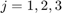

Midterm 1
Contents
1.b
M1 = [1 j 0;
0 1 j;
0 j 0];
M2 = [1+j, 1+j, 1+j;
2 2 2 ;
0 0 0];
M3 = [1-j, 4, 5;
1-2j, 6, 7;
1-3j, 8, 9];
V = [reshape(M1,[9,1]),reshape(M2,[9,1]),reshape(M3,[9,1])];
rref(V);
1.c
Find three orthonormal matrices such that
This can be done using the Gram-Schmidt orthogonalization prodecure detailed in section 2.15 of the book.
N1 = M1/sqrt(trace(M1'*M1)) e2 = M2 - trace(N1'*M2)*N1; N2 = e2/sqrt(trace(e2'*e2)) e3 = M3 - trace(N1'*M3)*N1 - trace(N2'*M3)*N2; N3 = e3/sqrt(trace(e3'*e3))
Verify that they are orthogonal by when for and 
trace(N1'*N2); trace(N1'*N3); trace(N2'*N3);
N1 = 0.4472 + 0.0000i 0.0000 + 0.4472i 0.0000 + 0.0000i 0.0000 + 0.0000i 0.4472 + 0.0000i 0.0000 + 0.4472i 0.0000 + 0.0000i 0.0000 + 0.4472i 0.0000 + 0.0000i N2 = 0.0535 + 0.3742i 0.1604 + 0.0535i 0.2673 + 0.2673i 0.5345 + 0.0000i 0.3207 + 0.1069i 0.4276 - 0.2138i 0.0000 + 0.0000i -0.1069 - 0.2138i 0.0000 + 0.0000i N3 = -0.0725 + 0.0544i -0.0816 - 0.1315i 0.2539 - 0.1224i -0.1859 - 0.1383i 0.2018 + 0.2766i 0.0340 + 0.0113i 0.0793 - 0.2380i 0.3786 - 0.0091i 0.7141 + 0.0000i
2.
2.a
Find the range and nullspace of A. To find the nullspace of A, we need to find a vector s.t. Ax = 0. This can be done by finding the row reduced echelon form of A.
A = [1 2 0; 0 3 1];
A_rref = rref(A)
null_space = [2/3;-1/3;1]
null_space = null_space/norm(null_space);
% this is the same result as matlab's function
null(A);
2.b
Using the answer from part a, we need to find the projection matrix Pb That projects onto the nullspace of A. This can be done easily using equation 2.20 from the book. where is the null space of
B = [2/3,-1/3,1]'; Pb = B*inv(B'*B)*B' % The following is for testing purposes. % create a random vector in $R^3$ and project it onto the nullspace of A % then multiply it by A. The result should be the zero vector. x = randi([-100,100],[3,1]); zero_vector = A*Pb*x
A_rref =
1.0000 0 -0.6667
0 1.0000 0.3333
null_space =
0.6667
-0.3333
1.0000
Pb =
0.2857 -0.1429 0.4286
-0.1429 0.0714 -0.2143
0.4286 -0.2143 0.6429
zero_vector =
0
0
3.
% numerical approximation t = linspace(0,1,10000)'; A = [1-t.^2,exp(-t)]; x = (1+t+t.^2+t.^3); c_n = A\x % Testing: y and z should be orthogonal to each other since they are in % orthogonal subspaces. This means the inner product between them should be % zero. y = A*c_n; z = x-y; sum(y.*z) % should be close to zero
c_n = -7.5307 10.9214 ans = 1.5019e-11
4.
load('mid1_p4_data.mat') B = [sin(10*t'), t.^2',t',ones(length(t),1)]; C = B\x' x_hat = B*C; err = x_hat - x'; figure(1),clf; plot(t',x_hat); hold on plot(t',x'); plot(t',err); legend(["x_{hat}","x","err"])
C =
9.8557
1.9914
3.1567
3.4535
5
Construct the gramiam to find the coefficients that minimize cost.
y1 = ones(12,1);
y2 = linspace(1200,100,12)'.*ones(12,1);
R = [dot(y1,y1), dot(y1,y2);
dot(y1,y2), dot(y2,y2)];
b = [0;10^6];
c = inv(R)*b
% Construct u(k) and p(k) for plotting
u = [y1,y2]*c;
p = zeros(12,1);
temp = 0;
for index = 1:12
p(index) = 100*sum(u(1:index));
end
% Get the total products produced and the number of workers at the end.
total_produced = sum(p)
u_12 = sum(u)
% Plot the results
figure(2),clf;
plot(p/1000)
hold on
plot(u)
legend(["p/1000","u"])
axis tight
c =
-454.5455
0.6993
total_produced =
1.0000e+06
u_12 =
3.4106e-13